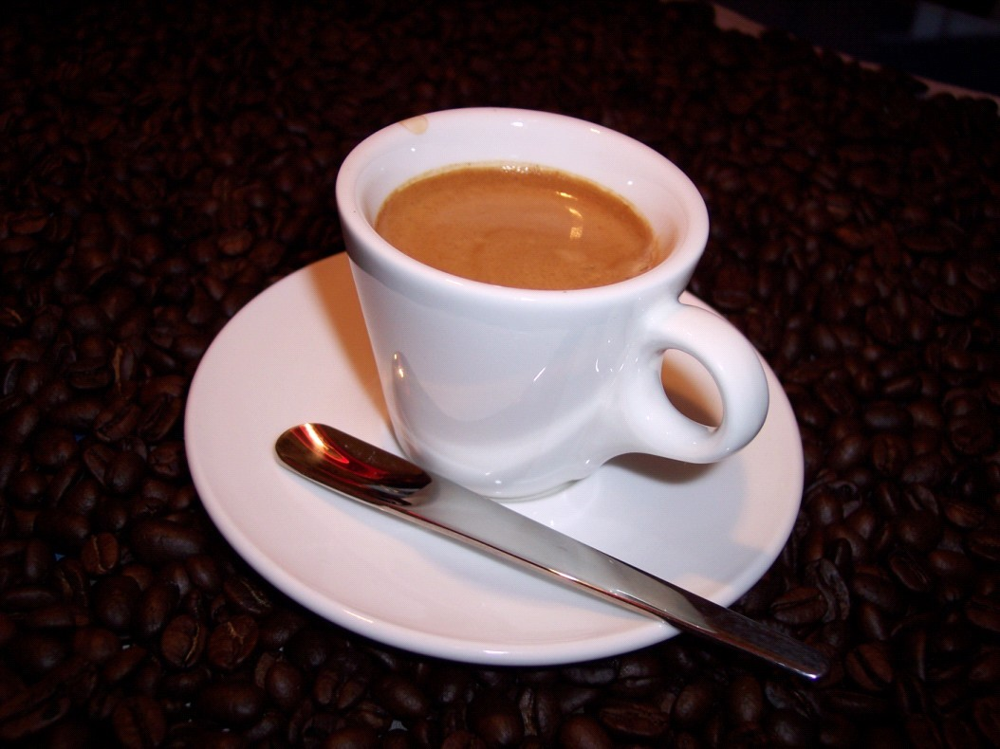

浓缩咖啡
意式浓缩咖啡（Espresso），是一种口感强烈的咖啡类型，方法是以92摄氏度的热水，借由高压冲过研磨成很细的咖啡粉末来冲出咖啡。它发明及发展于意大利，年代始于20世纪初，但直到1940年代中期以前，它是种单独透过蒸气压力制作出的饮品。在发明弹簧瓣杠杆(spring piston lever)咖啡机，并成功商业化，将浓缩咖啡转型成为所知的饮品。 从质上面定义，浓缩咖啡有着较滴滤式咖啡浓稠的质感，每单位体积内含有较滴滤式咖啡更多的溶解物质；通常供应量是以“份”(shot)来计算。浓缩咖啡在化学成分上是复杂而善变的，其中许多成分会因氧化或者温度降低而分解。冲制恰当的浓缩咖啡有项特点——咖啡油脂(Crema)的存在，一种红棕色的泡沫，漂浮在浓缩咖啡表面。其由植物油、蛋白质以及糖类所构成。咖啡脂具有乳剂与泡沫胶体两种元素的结合。 借由短时间而高压冲煮过程，使得一杯咖啡特有的风味经浓缩后，表现的较其他冲煮器材来为强烈。不过，也因淬取时间短使得咖啡因成分反而较少。浓缩咖啡常作为掺入其他成分(如牛奶或可可粉)的咖啡饮料基础，例如拿铁咖啡、卡布奇诺、玛奇雅朵以及摩卡咖啡，而不会过度稀释掉咖啡成份。
制作参数
单份Espresso咖啡粉量 9±2g
水温度 90± 2℃ 冲煮头压力 9 ±1bar
萃取时间 25±5 seconds
以上仅为初始参照数据，不能用于判断咖啡制作结果的好坏。 主要分类
搭配建议
1. 黑巧克力，这是意式咖啡的绝配，很多咖啡馆会提供这样的经典搭配。